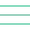

<header class="menu">
    <button (click)="openMenu()" class="btn-open-menu">
        
    </button>
    <h1 class="title">RaidoGlobal-Hub</h1>
    <nav class="links">
        @for (item of  menuItems; track $index) {
            <a [href]="item.url">{{item.title}}</a>
        }

        @if(userService.logInState()===true){
           
            <button (click)="closedSesion()">Cerrar sesion</button>
        }@else {
            
            <a href="oauth/logIn">Iniciar sesion</a>
            <a href="oauth/singUp">Registrarse</a>
            

        }
    </nav>
</header>

<aside class="menu-later close" id="menu-later">
    <button (click)="openMenu()" class="btn-close-menu">Cerrar</button> 
    <ul class="links-later">
        @for (item of  menuItems; track $index) {
            <a [href]="item.url">{{item.title}}</a>
        }

        @if(userService.logInState()===true){
           
            <button (click)="closedSesion()" >Cerrar sesion</button>
        }@else {
            
            <a href="oauth/logIn">Iniciar sesion</a>
            <a href="oauth/singUp">Registrarse</a>
            

        }
    </ul>
</aside>
